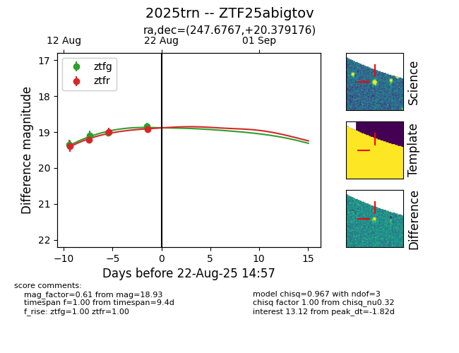

Target 2025trn at 2025-08-21 11:20, see:
FINK: fink-portal.org/ZTF25abigtov
Lasair: lasair-ztf.lsst.ac.uk/objects/ZTF25abigtov
ALeRCE: alerce.online/object/ZTF25abigtov
TNS: wis-tns.org/object/2025trn
YSE: ziggy.ucolick.org/yse/transient_detail/2025trn
alt names
ZTF25abigtov (ztf,alerce)
2025trn (tns,yse)
coordinates:
equatorial (ra, dec) = (247.6767,+20.37918)
galactic (l, b) = (37.6798,+39.75380)
photometry
last ztfg=18.83, ztfr=18.93
4 ztfg, 4 ztfr detections
